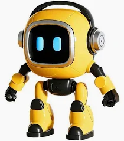
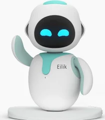
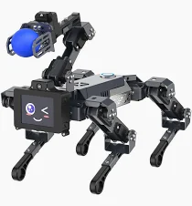

Tu asistente inteligente
Mi Primer Robot IA es tu compañero inteligente para todas tus necesidades, es muy amigable. Puede responder a tus preguntas, contar chistes y ayudarte con tus tareas diarias.¡Explora nuestras funciones y descubre cómo podemos ayudarte!
Funciones Destacadas
- Asistente de voz para responder preguntas
- Generador de chistes para alegrar tu día
- Organizador de tareas para mantenerte productivo
Amarillo

Comprar en AmazonRobot infantil con IA que habla varios idiomas y responde por voz, ideal para aprender jugando en casa. Ayuda a los niños a desarrollar habilidades sociales, gestionar emociones y trabajar en equipo de forma natural. Incluye juegos, historias y retos que estimulan la imaginación y el pensamiento lógico. Combina diversión y aprendizaje para que toda la familia participe y disfrute juntos. Un regalo original y educativo que convierte cualquier momento en una experiencia special.
Blanco

Comprar en AmazonRobot interactivo con personalidad propia que ofrece compañía emocional y momentos divertidos en el día a día. Interactúa con otros robots, creando juegos, conversaciones y situaciones únicas que entretienen a niños y adultos. Aprende y evoluciona constantemente gracias a actualizaciones, manteniendo la experiencia siempre fresca y sorprendente. Llena de vida cualquier espacio con reacciones y gestos adorables que responden al tacto y la interacción. Un regalo original y diferente que combina tecnología, diversión y conexión emocional para toda la familia.
Robot

Comprar en AmazonPerro robot inteligente con cámara, micrófono y altavoz que combina visión, voz y comprensión avanzada mediante IA. Reconoce objetos, rostros y emociones, y puede responder o actuar según el entorno de forma autónoma. Incluye brazo robótico opcional para agarrar y mover objetos, ampliando sus funciones interactivas. Compatible con modelos de IA como ChatGPT, ofreciendo comunicación por voz y texto en tiempo real. Ideal para aprender tecnología, crear proyectos o disfrutar en casa como un compañero interactivo y educativo.